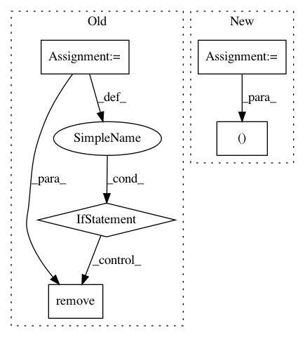

3a390e0add5588c3b4cb2cb29f14314b8b96e14b,conceptnet5/web_interface/utils.py,,get_sorted_languages,#,23
Before Change
def get_sorted_languages():
keys = LANGUAGES.keys()
non_ascii = []
for key in keys:
if ord(key[0]) > 127:
non_ascii.append(key)
keys.remove(key)
sort = sorted(keys, key=str)
//Return a dictionary that can be used in a template
//containing the sorted list of keys and the actual
After Change
def get_sorted_languages():
return [
(lang, CODE_TO_ENGLISH_NAME[lang])
for lang in SUPPORTED_LANGUAGE_CODES
]
In pattern: SUPERPATTERN
Frequency: 3
Non-data size: 5
Instances
Project Name: commonsense/conceptnet5
Commit Name: 3a390e0add5588c3b4cb2cb29f14314b8b96e14b
Time: 2014-03-13
Author: rob@luminoso.com
File Name: conceptnet5/web_interface/utils.py
Class Name:
Method Name: get_sorted_languages
Project Name: Qiskit/qiskit-aqua
Commit Name: ed8971aa7d3805f8fb748281d8de3b322a7459cb
Time: 2019-03-13
Author: donny@ibm.com
File Name: test/test_caching.py
Class Name: TestCaching
Method Name: test_saving_and_loading
Project Name: scipy/scipy
Commit Name: 73f93c38591b0099682d82e790aec13fcd13a6f5
Time: 2013-08-14
Author: argriffi@ncsu.edu
File Name: scipy/integrate/quadpack.py
Class Name: _NQuad
Method Name: _int